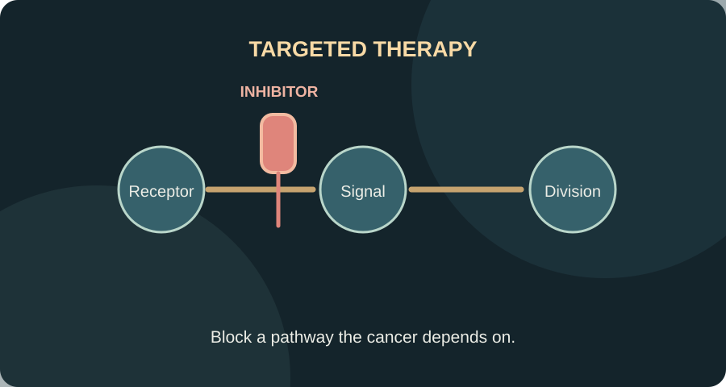

Why one or two genes are not the entire story
Experiments manipulating oncogenes show that altered genes can help cause tumors, but a fully malignant cancer does more than multiply. It invades tissues, survives immune pressure, attracts blood supply, spreads to distant organs, and sometimes resists treatment. Several abilities may need to accumulate before a cell behaves like a dangerous, evolving cancer.
Cellular signaling pathways
Genes produce proteins that interact in networks of signals. One protein may activate another, inhibit a third, or change whether a cell divides or dies. These chains are called signaling pathways. Mutations can alter different steps in the same pathway, producing similar consequences despite involving different genes.
Cancer evolves over time
The chapter imagines a cell collecting mutations across years. Some changes confer little benefit; others give its descendants an advantage. A successful clone expands, and further mutations create additional subclones. Natural selection operates inside a tumor, especially when treatment kills sensitive cells and leaves resistant ones behind.

The hallmarks framework
Douglas Hanahan and Robert Weinberg organize cancer's common capabilities into the influential hallmarks of cancer framework. These include persistent growth signaling, escaping growth suppression, resisting cell death, maintaining replicative potential, obtaining blood supply, and invasion and spread. The framework does not say every tumor has one identical mutation; it describes recurring functional achievements of malignant cells.
From scattered discoveries to a map
Cancer biology has progressed from cataloging tumors to understanding connected molecular systems. With a clearer map of what cancer cells must accomplish, researchers can begin designing medicines to interfere with particular steps. This opens Part Six: the search for therapies based on genetic and biochemical understanding rather than blind escalation of toxicity.